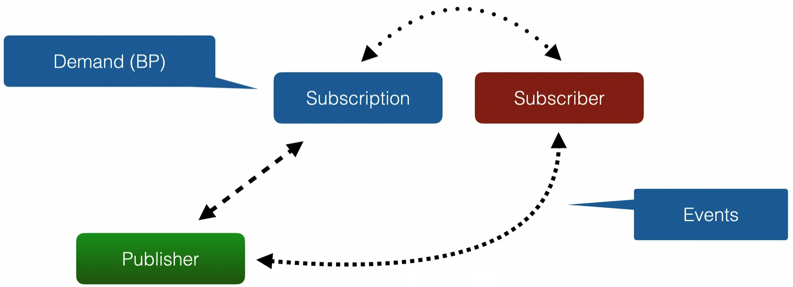

Reactive Programming Reactive Manifesto Originally published in 2013. It is available at reactivemanifesto.org Reactive Manifesto talks about the system being Responsive The system responds in a timely manner. Responsiveness is the cornerstone of usability and utility. Responsiveness also means problems may be detected quickly and dealt with effectively. Responsive systems provide rapid and consistent response times. Consistent behavior simplifies error handling, builds end user confidence, and encourages further action. Resilient System stays responsive in the face of failure. Resilience is achieved by replication, containment, isolation, and delegation. Failures are contained within each component. Parts of the system can fail, without compromising the system as a whole. Recovery of each component is delegated to another. High-availability is ensured by replication where necessary. Elastic The system stays responsive under varying workload. Reactive Systems can react to changes in the input rate by increasing or decreasing resources allocated to service inputs. Reactive Systems achieve elasticity in a cost-effective way on commodity hardware and software platforms. Message Driven Reactive Systems rely on asynchronous message passing to establish a boundary between components. This ensures loose coupling, isolation and location transparency. Message passing enables load management, elasticity, and flow control. Location transparent messaging makes management of failures possible. Non-blocking communication allows recipients to only consume resources while active, leading to less system overhead. Reactive Programming Reactive Programming is a useful programming paradigm focused on non-blocking, asynchronous execution - a key characteristic of Reactive Systems. Reactive does NOT equal fast! A typical CRUD type application will not see much, if any performance improvement. Reactive can improve computing efficiency, so it is best used for streaming type applications. The immutable nature of Reactive Applications can help with Application quality. Interactive programs work at their own pace and mostly deal with communication, while reactive programs only work in response to external demands and mostly deal with accurate interrupt handling. Features of Reactive Programming Asynchronous Events are captured asynchronously. A function is defined to execute when an event is emitted. Another function is defined if an error is emitted. Another function is defined when complete is emitted. This can be a difficult paradigm to adjust to when first getting started! Non-Blocking In Blocking, the code will stop and wait for more data (e.g. reading from disk, network, etc.) Non-Blocking will process available data, ask to be notified when more is available, then continue. Back Pressure The ability of the Subscriber to throttle data. Failures as Messages Exceptions are not thrown in a traditional sense. Would break processing of stream. Exceptions are processed by a handler function. Data Streams Reactive Programming focuses on processing streams of data. Reactive Streams API Reactive Streams API is adopted by: Akka Streams MongoDB Ratpack Reactive Rabbit Project Reactor (Spring 5) RxJava Slick 3.0 Vert.x 3.0 Cassandra ElasticSearch Kafka Play Reactive Streams API is part of the Java 9. Reactive Streams API is a set of 4 Interfaces which define the API: ⚪ Publisher<T> - a producer of items (and related control messages) received by ⚪ Subscriber<T>. Each current ⚪ Subscriber<T> receives the same items (via method onNext) in the same order, unless drops or errors are encountered. If a ⚪ Publisher<T> encounters an error that does not allow items to be issued to a ⚪ Subscriber<T>, that ⚪ Subscriber<T> receives onError, and then receives no further messages. Otherwise, when it is known that no further messages will be issued to it, a ⚪ Subscriber<T> receives onComplete. ⚪ Subscriber<T> - a receiver of messages. ⚪ Subscription - message control linking a ⚪ Publisher<T> and ⚪ Subscriber<T>. ⚪ Subscriber<T> receive items only when requested, and may cancel at any time. The methods in this interface are intended to be invoked only by their ⚪ Subscriber<T>. Usages in other contexts have undefined effects. ⚪ Processor<T,R> - a component that acts as both a ⚪ Subscriber<T> and ⚪ Publisher<T> 